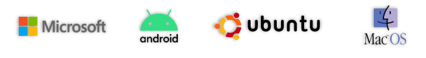
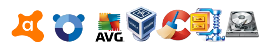
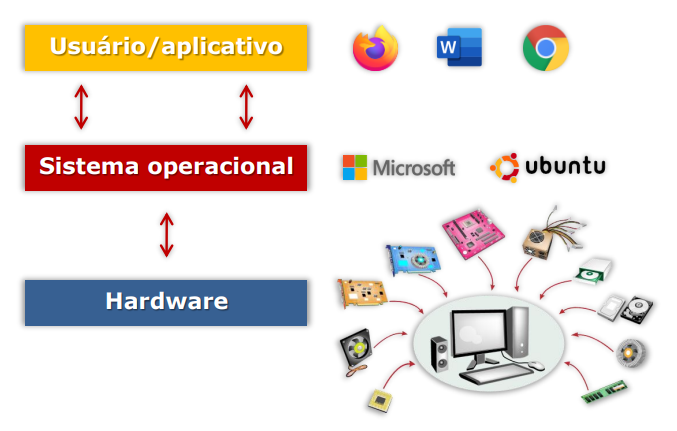
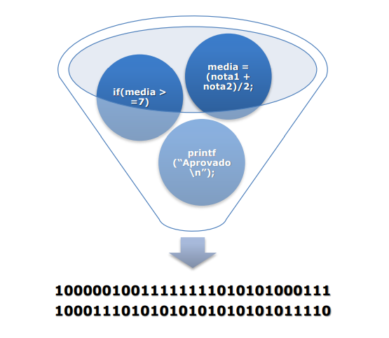
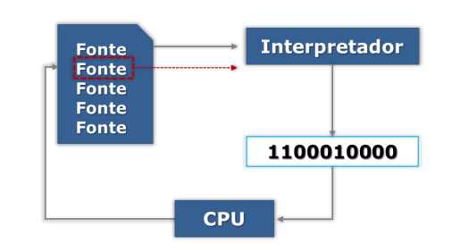
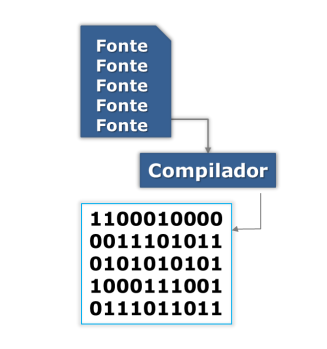

Software
TEMA 1 – Software, Programas e Sistemas
Softwares, programas e sistemas são elementos constantes em nossa vida cotidiana, e é fundamental entender suas distinções.
1.1 Software e Programas
Uma definição técnica de software, dada por Pressman (2001), compreende:
- Instruções (programas de computador) que, quando executadas, fornecem características, funções e desempenho desejados.
- Estruturas de dados que permitem aos programas manipular informações adequadamente.
- Informação descritiva, impressa ou virtual, que descreve a operação e o uso dos programas.
Simplificando, um software é um programa de computador e toda a documentação associada a ele.
Um programa, por sua vez, é definido na área de TI como uma sequência de passos ou instruções definidas por um algoritmo. Pode-se pensar em um algoritmo como uma "receita de bolo" ou um tutorial.
O software pode ser classificado de diversas maneiras. Uma adaptação da classificação de Marçula (2009) distingue:
- Software de sistema (básico)
- Software aplicativo
1.2 Software de sistema (básico)
O software básico é uma coleção de programas que apoiam o funcionamento de outros programas, realizando as tarefas de gerenciamento necessárias. Nesta categoria, encontramos:
- Sistemas Operacionais (SO): software responsável pelo funcionamento geral dos sistemas de computação. Sem eles, os sistemas não funcionariam. Exemplos incluem Windows, Unix, Linux e MacOS. Devido à sua importância, o sistema operacional é o software mais crucial, supervisionando os processos e gerenciando hardware e software do computador. 
- Software Utilitário ou Ferramentas de Sistema: Acompanham o sistema operacional e o auxiliam em suas tarefas, como gerenciamento de dispositivos, mídias e programas. Eles fornecem ferramentas para organizar discos, verificar memória e corrigir falhas. São considerados "úteis" ao sistema operacional.
- Exemplos de utilitários incluem:
- Antivírus: Detecta e remove programas maliciosos (vírus).
- Compactadores: Reduzem o tamanho de arquivos.
- Emuladores: Simulam ambientes específicos, como o VmWare que simula um computador.
- Desfragmentadores: Eliminam a fragmentação de um sistema, juntando partes de arquivos dispersas para melhorar o desempenho.
- Formatadores e backup: Apagam todos os dados e reinstalam o sistema. 
1.3 Software aplicativo
Também chamado de aplicativo ou "app", o software aplicativo realiza algum trabalho específico para o usuário. Exemplos são planilhas, editores de texto, navegadores (browsers) e editores de imagem.
TEMA 2 – Sistema Operacional
Um sistema pode ser definido como um conjunto de partes que interagem para alcançar um objetivo. No contexto de software, um sistema é um conjunto de softwares que interage para alcançar um determinado objetivo.
O Sistema Operacional, como visto, faz parte da categoria de software básico. Ele é responsável pela supervisão dos processos executados em um computador, gerenciando todo o hardware e software e realizando a "comunicação" entre eles. Um "processo" pode ser entendido como um programa em execução.
O SO atua como uma camada intermediária entre o aplicativo utilizado pelo usuário e o hardware.
As funções do sistema operacional incluem:
- Facilitar o uso do computador pelo usuário, simplificando a utilização de seus recursos (hardware e software).
- Gerenciar os recursos do computador, incluindo placa de vídeo, placa de rede, memórias, softwares instalados e periféricos como mouse e headset.
- Controlar a execução de programas pela CPU (Central Process Unit – o processador).
2.1 Sistemas Tradutores
Como parte do sistema básico, os sistemas tradutores são cruciais, especialmente para desenvolvedores. Eles convertem programas escritos em linguagens de programação de alto nível para uma linguagem de máquina (bits) que o computador pode entender e executar.
Linguagens de programação podem ser divididas em duas categorias principais: linguagens interpretadas e linguagens compiladas. A principal diferença entre elas está no processo de tradução do código fonte para código executável. Linguagens interpretadas são mais fáceis de aprender e de prototipar, enquanto linguagens compiladas oferecem maior performance e segurança.
Existem dois tipos principais de tradutores:
- Interpretadores: O código é interpretado linha por linha. A analogia é um intérprete simultâneo que traduz enquanto se fala. Exemplos de linguagens interpretadas são Python, Ruby, JavaScript e PHP. 
- Compiladores: Traduzem o código todo de uma vez, gerando um arquivo executável (por exemplo, um .exe). A analogia é a tradução de um livro completo antes da entrega. Exemplos de linguagens compiladas são C, C++, Java e Rust. 
A maioria das linguagens de programação pode ter implementações compiladas e interpretadas – a linguagem em si não é necessariamente compilada ou interpretada. Porém, para fins de simplicidade, elas são normalmente referidas deste modo. Python, por exemplo, pode ser executado como um programa compilado ou como uma linguagem interpretada em modo interativo.
TEMA 3 – Algoritmos e Linguagens
3.1 Algoritmos
Um algoritmo é uma sequência de passos que visa atingir um objetivo bem definido. Esta definição, de Forbellone (2022), ressalta que o algoritmo representa o raciocínio lógico envolvido na solução de um problema e pode ser traduzido para qualquer linguagem de programação.
Para entender a forma como os programas são construídos, é importante diferenciar sintaxe e semântica.
- Sintaxe: Refere-se às regras, premissas e restrições que determinam como as palavras, expressões, comandos ou unidades de programas devem ser combinadas para formar enunciados ou estruturas corretas em uma determinada linguagem. Um erro de sintaxe torna a expressão incorreta formalmente.
- Semântica: Relaciona-se com o conteúdo, o significado formal das expressões, comandos ou unidades de programas. Erros de semântica estão ligados à lógica de programação, ou seja, a expressão pode estar sintaticamente correta, mas não fazer sentido lógico.
Exemplo de algoritmo: calcular a média de provas e classificar
- Obter as duas notas de provas
- Calcular a média aritmética
- Se a média for igual ou maior que 7, o aluno está aprovado
- Se não, está reprovado
3.2 Linguagens
Depois de desenvolver um algoritmo, que representa a lógica de programação e a estrutura de dados, ele é implementado em uma linguagem de programação. Cada linguagem de programação possui uma sintaxe específica e regras gramaticais próprias.
Comando para imprimir "Olá Mundo!" varia em linguagens:
C:
printf("Olá Mundo!")
Java:
System.out.print("Olá Mundo!")
Python:
print("Olá Mundo!")
Abaixo podemos visualizar o algoritmo do exemplo sobre média de provas implementado em três linguagens de programação diferentes.
C:
//Obter as duas notas de provas
printf("Digite a primeira nota: ");
scanf_s("%d", ¬a1);
printf("Digite a segunda nota: ");
scanf_s("%d", ¬a2);
//Calcular a média aritmética
media = (nota1 + nota2) / 2;
//Se a média for igual ou maior que 7, o aluno foi
aprovado
if (media >= 7)
printf("Aprovado");
//Se não, ele foi reprovado
else
printf("Reprovado");
Java:
//Obter as duas notas de provas
System.out.println("Digite a primeira nota: ");
float nota1 = teclado.nextFloat();
System.out.println("Digite a segunda nota: ");
float nota2 = teclado.nextFloat();
//Calcular a média aritmética
float media = (nota1 + nota2)/2;
//Se a média for igual ou maior que 7,o aluno foi aprovado,
if (media >= 7)
System.out.println("Aprovado");
//Se não, ele foi reprovado
else
System.out.println("Reprovado");
Python:
#Obter as duas notas de provas
nota1 = float(input("Digite a primeira nota: "))
nota2 = float(input("Digite a segunda nota: "))
#Calcular a média aritmética
media = (nota1 + nota2)/2
#Se a média for igual ou maior que 7, o aluno foi aprovado
if media >= 7:
print("Aprovado")
#Se não, ele foi reprovado
else:
print("Reprovado")
A estrutura de dados refere-se à forma como os dados são armazenados e organizados na memória, com cada linguagem tendo comandos específicos para manipulá-las, como os vetores (arrays ou listas).